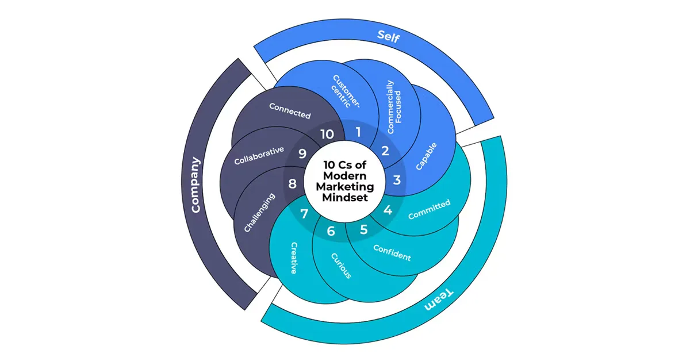

What separates good email marketers from truly exceptional ones?
For Komal Helyer, it’s not just about mastering tools or tactics — it’s about mindset. With over 20 years of experience in marketing, Komal explores how self-awareness, soft skills, and curiosity fuel lasting success. Through engaging stories and interactive challenges, she reveals how embracing a growth mindset can change not only your work but the way you approach every opportunity.
TL;DR
- Success in email marketing starts with mindset, not just skillset
- Growth beats perfection every time
- Know yourself, set SMART goals, and stay curious
- Soft skills shape the smartest strategies
Komal Helyer: Hello everyone, how are you? Are you ready for some action? Okay. Today, I’m here to discuss the mindset of the smart email marketer. Yesterday, we learned a great deal about the challenging aspects — the skills, the technology, and many of the more technical details. Today, we’re going to focus on the soft skills. A quick introduction about me: I have over 20 years of experience in marketing, and I’ve been in email marketing for around 20 years as well. I’ve worked both brand and agency sides, as well as with ESPs. I was VP of Marketing at Pure 360, and now I’m a fractional CMO. I’m also the Chair of the DMA Email Council, a judge for several awards, and I write for Forbes and other publications.
Today, we’re going to start with a quick icebreaker, then we’ll discuss the qualities of a marketer. We’re all marketers here, and we’ll explore mindset — specifically, growth versus fixed mindset. I’ll set you a challenge, then we’ll discuss what we learned from it, and finally, we’ll focus on how to get smart. First, a quick icebreaker. I’d like everyone to stand up and form rows — from youngest to oldest in each row. Three rows, youngest to oldest. Go on, get to know each other quickly! Okay, who’s the youngest in your row? 25? And the oldest? 39? Great. Now, arrange yourselves by height, shortest to tallest. Done? Perfect. You can all sit down. Thank you very much. I am officially the eldest in the room. Now let’s get into some of the more serious stuff before we have more fun. Let’s talk about the qualities of a successful marketer — the hard and the soft skills.

Over the last day, you’ve learned a lot about the hard skills: the technology behind email, the strategy, and so on. But when it comes to success, much of it comes down to you — the person. That’s what we’re here to explore: to uncover who you are and how your mindset shapes your success. This is a chart from Econsultancy showing the ten key skills marketers should possess — the 10 Cs of a marketer’s mindset, ranging from customer centricity to collaboration, with many points in between. It’s a lot to take in. First, be kind to yourself. I’ll end on that note later, but it’s important to start there, too. Get to know yourself, because much of this is about your own mindset. Do you have a growth mindset or a fixed mindset? Knowing which one you have helps you see yourself and your challenges in a different light. Brains and talent are only the starting point of a successful career. The rest depends on your mind.
Who thinks they have a growth mindset? Stand up. Great — that’s what I expected. I’m going to give you an exercise. Do you all have pens? Good. Now, who’s still in the same position as before — fixed or growth? And who’s changed? What I’m trying to show is that even if we think we have a growth mindset, there are always parts of us that are still fixed. If we’re honest, we all have both.
So, what do 'fixed' and 'growth' mean?
- A fixed mindset is when you believe that talent and intelligence are what determine success — and that they can’t be changed.
- A growth mindset is when you believe talent and intelligence can be developed. When faced with challenges, you see opportunities to learn and overcome obstacles.
Why does this matter? Because the brain is incredibly malleable. As we live, grow, and learn, we travel to new places, experience new things, and engage in creative activities that help our brains grow. The more you do that, the more you move toward a growth mindset. You have to put yourself in situations you never imagined, step up to challenges, and trust that your brain is wired to handle them. Let’s move on to a new challenge. Has anyone heard of the marshmallow challenge? No, not eating marshmallows! You’ll form groups of four. Your task is to build the tallest tower you can, with a marshmallow on top, using the materials in your bag.
Now, who learned the most about themselves today? Hands up — there are prizes!
Who discovered they don’t handle pressure well? Did you know that before? No? That’s the point — when we’re in new situations, we learn about ourselves, how we work as individuals and as teams. Going back to those 10 Cs of a modern marketing mindset: collaboration, networking, and being part of your community — all are key.

I’d like you to take a piece of paper and write down two or three SMART objectives for yourself. Not for your company or your campaigns — for you. Who knows what SMART stands for?
S: Specific
M: Measurable
A: Attainable
R: Realistic
T: Time-bound
Ensure your goals align with these criteria. Consider how you would like to develop as a person and as a professional. Align your goals with the 10 Cs, or create your own. For example, maybe you want to be one of the best-known email marketers for deliverability. To get there, you’ll need to build relationships, learn new skills, and take specific steps. Write those steps down as SMART goals. There’s no right or wrong answer here. It’s okay if it feels difficult — many people find it hard to go deep like this. To be a successful email marketer, you have to know yourself: understand your limitations, recognize that they’re only temporary, and take small steps to improve. Let me leave you with a few parting thoughts. Believe in yourself. When you’re being hard on yourself, take a moment to reflect. Set measurable goals and clear timelines. Break them down into smaller steps and plan how to achieve each one. For example, I know reading is essential for growth. I set myself a goal to read 60 books a year — primarily fiction, as I already regularly read business books. It helps me understand storytelling. I also set health goals, like cycling a certain number of miles. I’m not doing great at it, but I still set measurable, time-bound goals.
Ask yourself: what will I achieve this year that will change me? Maybe it’s starting a new business (I started one six weeks ago), or winning an award. There are plenty of awards out there — apply for them. And find yourself a mentor. I’ve spoken to some of you today about this. I co-founded the Email Mentor program, so if you're interested in becoming a mentor or finding a mentor, please connect with me on LinkedIn, and I’ll share the next program details. Mentorship makes a significant difference — both for those striving to grow and for those already in leadership roles. Finally, be kind to yourself. Have fun, enjoy what you do, and remember that success isn’t just about achievement — it’s about finding happiness in what you do.
Thank you very much.